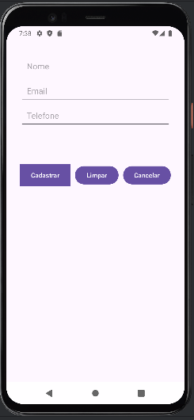

Disciplinas
-
DESENVOLVIMENTO PARA DISPOSITIVOS MÓVEIS Concluído
Materiais
Neste módulo, você aprendeu sobre como implementar o tratamento de eventos de interação do usuário em aplicativos, como criar aplicativos com mais telas, bem como fazer a navegação entre as telas.
O tratamento de eventos é um conceito fundamental na programação que permite que os aplicativos respondam a ações do usuário. A capacidade de gerenciar eventos de forma eficaz é crucial para o desenvolvimento de aplicativos modernos, sejam eles web, desktop ou móveis.
Conteúdo
Considerando a tela de cadastro elaborada para a atividade do fórum do módulo anterior, implemente o tratamento de evento de clique (toque) dos botões “Cadastrar”, “Limpar” e “Cancelar”, da seguinte forma:
- No botão “Cadastrar”: deve ser verificado se todos os campos de entrada de dados estão preenchidos. Caso positivo: informar ao usuário a mensagem “Cadastro realizado com sucesso!”. Caso negativo: informar ao usuário a mensagem “Cadastro não realizado. Verifique os dados inseridos!”.
- No botão “Limpar”: devem ser apagados os dados que já estejam inseridos ou selecionados nos campos de entrada.
- No botão “Cancelar”: deve ser fechada a tela de cadastro.
Comente e discuta com os colegas no fórum como foi a implementação dos eventos de clique dos três botões da tela de cadastro. Você teve alguma dificuldade? Qual foi a forma escolhida para informar o usuário sobre o sucesso ou fracasso do cadastro?
Resolução.
📱 activity_main.xml
<?xml version="1.0" encoding="utf-8"?>
<LinearLayout xmlns:android="http://schemas.android.com/apk/res/android"
xmlns:app="http://schemas.android.com/apk/res-auto"
xmlns:tools="http://schemas.android.com/tools"
android:id="@+id/main"
android:layout_width="match_parent"
android:layout_height="match_parent"
android:layout_margin="30dp"
android:orientation="vertical"
android:paddingBottom="30dp"
tools:context=".MainActivity">
<EditText
android:id="@+id/etNome"
android:layout_width="match_parent"
android:layout_height="wrap_content"
android:ems="10"
android:hint="Nome"
android:inputType="text"
android:padding="15dp" />
<EditText
android:id="@+id/etEmail"
android:layout_width="match_parent"
android:layout_height="wrap_content"
android:ems="10"
android:hint="Email"
android:inputType="text"
android:padding="15dp" />
<EditText
android:id="@+id/etTelefone"
android:layout_width="match_parent"
android:layout_height="wrap_content"
android:ems="10"
android:hint="Telefone"
android:inputType="text"
android:padding="15dp" />
<LinearLayout
android:layout_width="match_parent"
android:layout_height="match_parent"
android:layout_marginTop="80dp"
android:orientation="horizontal">
<Button
android:id="@+id/btCadastrar"
android:layout_width="111dp"
android:layout_height="wrap_content"
android:layout_marginRight="10dp"
android:background="#4CAF50"
android:backgroundTint="#4CAF50"
android:backgroundTintMode="add"
android:text="Cadastrar" />
<Button
android:id="@+id/btLimpar"
android:layout_width="96dp"
android:layout_height="wrap_content"
android:layout_marginRight="10dp"
android:text="Limpar" />
<Button
android:id="@+id/btCancelar"
android:layout_width="120dp"
android:layout_height="wrap_content"
android:layout_weight="1"
android:text="Cancelar" />
</LinearLayout>
</LinearLayout>
MainActivity.java
package com.example.cadastrodeusuarios;
import android.os.Bundle;
import android.text.TextUtils;
import android.widget.Button;
import android.widget.EditText;
import android.widget.Toast;
import androidx.activity.EdgeToEdge;
import androidx.appcompat.app.AppCompatActivity;
import androidx.core.graphics.Insets;
import androidx.core.view.ViewCompat;
import androidx.core.view.WindowInsetsCompat;
public class MainActivity extends AppCompatActivity {
EditText etNome, etEmail, etTelefone;
Button btCadastrar, btLimpar, btCancelar;
@Override
protected void onCreate(Bundle savedInstanceState) {
super.onCreate(savedInstanceState);
EdgeToEdge.enable(this);
setContentView(R.layout.activity_main);
ViewCompat.setOnApplyWindowInsetsListener(findViewById(R.id.main), (v, insets) -> {
Insets systemBars = insets.getInsets(WindowInsetsCompat.Type.systemBars());
v.setPadding(systemBars.left, systemBars.top, systemBars.right, systemBars.bottom);
return insets;
});
// Vinculando os campos
etNome = findViewById(R.id.etNome);
etEmail = findViewById(R.id.etEmail);
etTelefone = findViewById(R.id.etTelefone);
btCadastrar = findViewById(R.id.btCadastrar);
btLimpar = findViewById(R.id.btLimpar);
btCancelar = findViewById(R.id.btCancelar);
// Botão Cadastrar
btCadastrar.setOnClickListener(view -> {
String nome = etNome.getText().toString();
String email = etEmail.getText().toString();
String telefone = etTelefone.getText().toString();
if (TextUtils.isEmpty(nome) || TextUtils.isEmpty(email) || TextUtils.isEmpty(telefone)) {
Toast.makeText(this, "Cadastro não realizado. Verifique os dados inseridos!", Toast.LENGTH_LONG).show();
} else {
Toast.makeText(this, "Cadastro realizado com sucesso!", Toast.LENGTH_LONG).show();
}
});
// Botão Limpar
btLimpar.setOnClickListener(view -> {
etNome.setText("");
etEmail.setText("");
etTelefone.setText("");
});
// Botão Cancelar
btCancelar.setOnClickListener(view -> {
finish();
});
}
}

- Como foi a implementação dos eventos de clique dos três botões da tela de cadastro.
- No botão Cadastrar utilizei TextUtils.isEmpty() para verificar se todos os campos input estavam preenchidos e utilizei o Toast para exibir a mensagem "Cadastro realizado com sucesso!" e se caso algum campo estivesse vazio exibiria "Cadastro não realizado. Verifique os dados inseridos!"
- No botão Limpar utilizei o setText("") nos inputs.
- No botão Cancelar utilizei finish() para encerrar o Activity
- Você teve alguma dificuldade?
- A maior dificuldade foi lembrar os ids de forma correta.
- Qual foi a forma escolhida para informar o usuário sobre o sucesso ou fracasso do cadastro?
- Toast.makeText() para criar o alerta.